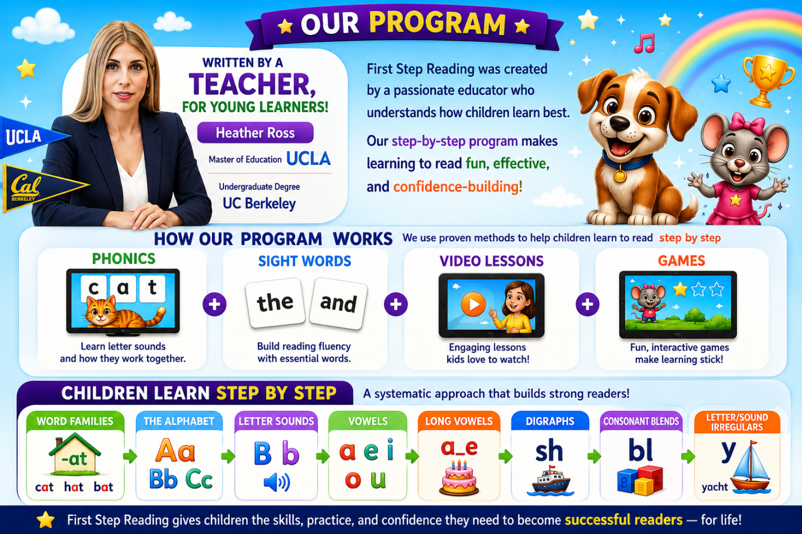

A free, hands-on math practice website built for Pre-K through Grade 1 — aligned to Common Core Math standards, so children practice exactly what they need for their grade level.

Every question is connected to a specific Common Core Math standard, helping children build strong skills step by step.
Every quiz includes an interactive Math Toolbox with the same manipulatives used in classrooms. Children can model their thinking, count, compare, build numbers, and solve problems on screen.
FirstStepMath combines Common Core practice, hands-on math tools, instant feedback, and fun rewards. Children don't just guess answers — they can use manipulatives to understand the math behind each question. It makes early math feel like play while helping kids build real confidence.
No credit card. No subscription. No ads. Just great math practice for every child.